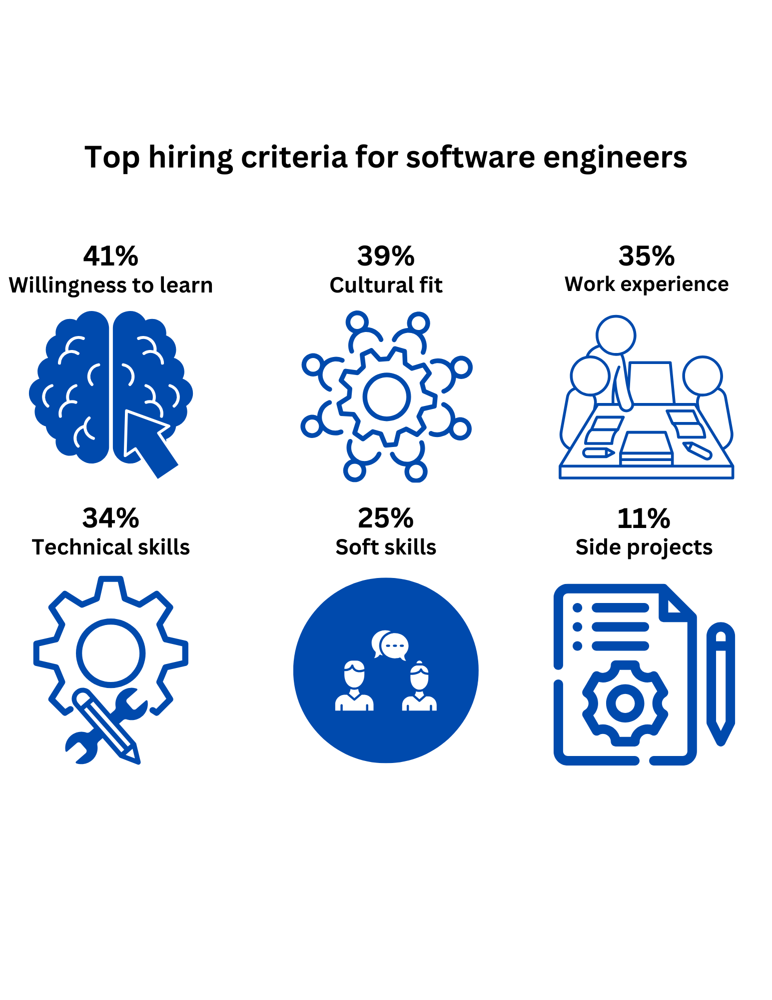

Final step
Once you have obtained an education, gained experience, and determined what area of software engineering you may want to specialize in, it is now time to prepare for job applications.
Creating a resume
An application material such as a resume is your first impression on a employer. So, it is important that your resume includes the necessary information that will help you succeed in job applications. On your resume you want to highlight important skills regarding programming languages, tools, and frameworks. Additionally, you need to include your education, experience, and relevant projects.
Job opportunities
Exploring platforms such as LinkedIn, Indeed, and Glass door can increase your chances of finding a job opportunitiy. Besides exploring platforms, you want to be actively networking. You can network by asking any friends, family members, or associates if they know of any open postions for software engineers. Also, you can attend events such as coding meetups and conferences.
Applying
Assuming you are an upcoming software engineer, it is important to ensure you are looking for entry-level roles. Futhermore, you will need to avoid jobs asking for multiple years of experience. Lastly, follow all the submission instructions carefully.
Interviews
Once you have been given a job opportunity, you need to start preparing for both technical and behavioral interviews. For technical interviews, your interviewer could give you a problem pertaining to data structures, algorithms, linked lists, and more. So, you want to practice using your coding skills by taking advantage of platforms like Codewars, HackerRank, and LeetCode. For behavioral interviews, there will be a focus on how you solve issues, work with teams, handle challenging situations, and more. To answer each question effectively, you can methods such as the STAR Method (Situation, Task, Action, Result) to formulate your responses.
